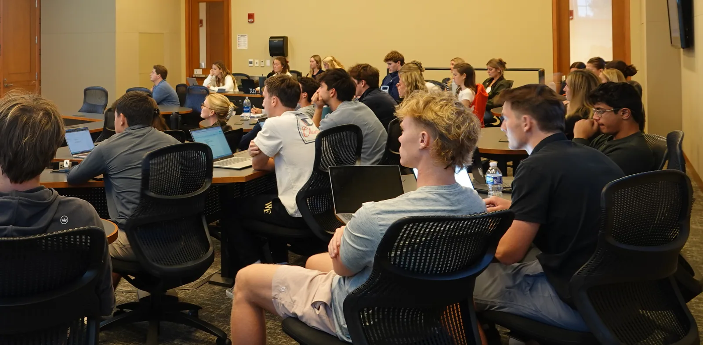

Resources
The DCC
resource library.
The club’s collection of case-prep tools, career resources, and reading. Explore on your own, then find a partner at a DCC meeting.
The DCC case library
Your next case
starts here.
Case books and practice material in one place. Bring a case to your next practice session.
Open the case libraryGoogle sign-in may be required. For access, email the board.

DCC case library
Case books and practice material for working through cases with a partner.
CaseQuestions.com
Marc Cosentino’s course and case interview preparation materials.
RocketBlocks
Drills for structures, charts, and case math.
OPCD career resources
Wake Forest career coaching, pathways, and recruiting resources.
Vault
Firm research, culture guides, and industry information.
What is consulting?
An introduction to the consulting industry.
Career Crush: Is consulting right for you?
Harvard Business Review’s video introduction to consulting careers.
Is consulting the right career for you?
Read the Harvard Business Review Career Crush article.
So you want to be a consultant?
Five signs that consulting may be a fit.
Skills for management consulting
An overview of the skills used in consulting.
The awkward person’s guide to networking
Advice for starting professional conversations.
Build your network
Wake Forest’s guide to developing professional connections.
Berkeley networking guide
A practical reference for reaching out and following up.
Practice with DCC
Meet other members and work through cases at a club workshop.
No resources match your search. Try another term or choose All.
Behavioral preparation
Make your
experience clear.
Practice telling the story behind your resume.
Use STAR—situation, task, action, result—to structure examples of leadership, conflict, learning, and impact. Work through them with a partner and ask for feedback.
Ask the board about practice sessionsDeacon Consulting Club
Practice is better with a partner.
Find fellow students preparing for consulting at a DCC meeting.